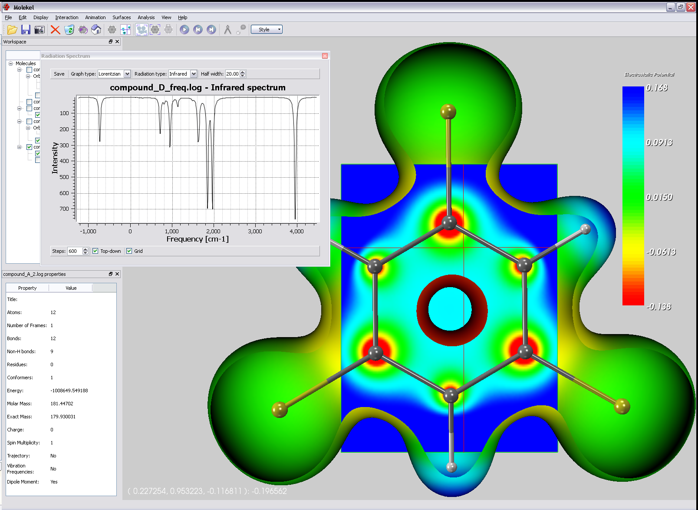

Click on image to enlarge
{kind=link}
Click on image to enlarge
Molekel is an open-source multi-platform molecular visualization program.
Some of the features available in the new version are:
- Multiplatform: Mac OS X, Windows, Linux
- Different methods to speed-up rendering of molecules with support for billboards and view-dependent level of detail techniques
- Programmable shaders; standard shaders to enhance rendering quality, outline contours and perform sketch-like renderings are provided
- Visualization of residues (ribbon or schematic)
- Complete control over the generation of molecular surfaces (bounding box and resolution)
- Visualization of the following surfaces:
- Orbitals
- Iso-surface from density matrix
- Iso-surface from Gaussian cube grid data
- SAS
- SES
- Van der Waals
- Animation of molecular surfaces
- Animation of vibrational modes
- Export high resolution images for 300+ DPI printing
- Export to PostScript and PDF
- Export animation
- Plane widget to visualize a scalar field: the plane can be freely moved in 3d space and the points on the plane surface will be colored according to the value of the scalar field: a cursor can be moved on the plane surface to show the exact value of the field at a specific point in space.
- Fully Doxygen-commented source code.